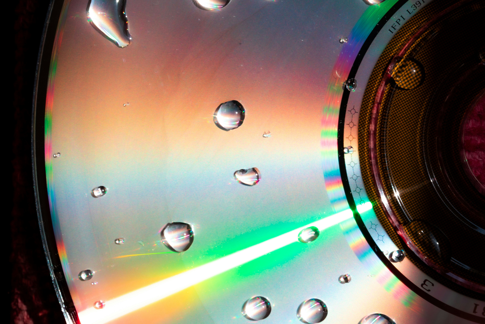
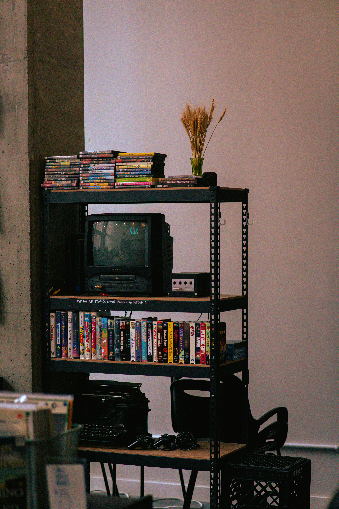
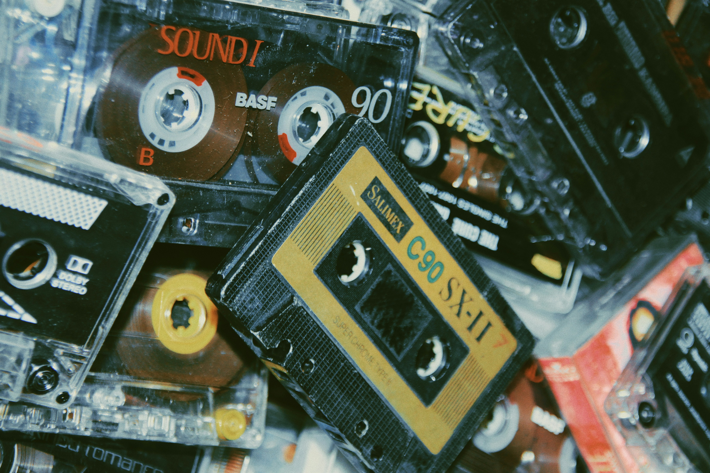

My Tech Issue Guide
Physical media and Physical Ownership
Physical Media Matters
"it's always that damn phone." But what's there to take us off them?
In today's age, you can do almost everything on your phone: listen to music, play games, draw/paint, watch movies, etc.
That convenience comes at a cost, though. I really liked this Pocket-Lint piece on why buying physical media is a small act of rebellion because it points out things most people don't notice, like how streaming services silently edit old episodes and compress video quality even when you pay for the highest tier.
It also touches on similar issues with books and consoles phasing out physical discs, but more on that later.
Why Ownership Matters

Buying vs. Renting Your Media
When you buy a physical piece of media like music, movies, or video games, you own a copy outright. You can lend it to a friend, play it offline forever (my favorite part), and keep it on your shelf (since streaming services constantly add and remove media).
When you buy a digital movie or game, you are usually only purchasing the license to access that file, which means the company can alter or remove it at any time. I'm not the only one who doesn't like that, this Guardian piece is full of interviews with everyday CD, tape, and DVD collectors and a great read. Especially the stories about whole shows vanishing off streaming and people ditching Spotify just to stop companies from tracking what they listen to.
The Trap of Digital Licensing

Why Purchased Media Disappears
Digital storefronts rely on temporary contracts. When those contracts expire, companies regularly delist games, movies, and shows, sometimes wiping them from user libraries even after you paid full price.
Companies don't even pretend otherwise anymore. This Video Games Chronicle report on Sony's court defense over digital games shows them flat-out arguing that "reasonable consumers" already know clicking "Buy Now" only gets you a temporary license instead of actual ownership.
Like mentioned before, digital updates can silently edit out original soundtracks, or alter scenes (I have a movie I "bought to own" on YouTube forever ago, and 2 voices changed since I bought it and I hated when I found that out. They can still take that away completely if they choose as well).
Scarcity and Supply

The Push Away From Discs and Cartridges
Major console makers and retailers are actively phasing out physical media to cut manufacturing costs and push consumers toward subscriptions and digital games. Many new gaming consoles ship without disc drives (or just don't make discs like Playstation is starting to do), and big-box stores have dramatically shrunk their physical movie aisles. Do you remember the $5 movie bins in Walmarts? Now you're lucky to have half an aisle near the books with movies.
Secondhand stores try to combat this lack of physical media on shelves. If you want to see how fast major companies are backing out, this Polygon report on Sony discontinuing its last 4K Blu-ray player in Japan lays it all out, showing how they're not just ditching physical game discs by 2028, but getting rid of another important piece altogether.
As physical runs get smaller, copies become harder to find at retail price, driving up secondhand market costs and making physical ownership feel like a luxury. Physical stores may have a case dedicated to rare and expensive games (usually pokemon games from my experience), while online prices can really vary due to private sellers.
The Other Side of The ARgument
Other Opinions
You may not agree with me or other people about the importance of physical media in today's digital age, and you don't have to.
I understand. Just like collecting anything, it can cost quite a bit, not to mention the costs to manufacture these discs or other media.
Resources to be add (they few I have are books I'm looking through, will add sites soon)
Preservation and Action

Protecting Your Media Collection
When media exists only on outside servers, entire eras of film, television, and gaming history are at risk of being lost forever if a platform shuts down (a good example is the recent Ao3 shutdow. Even tho it wasn't permanent, it caused an uproar online). Physical discs, cartridges, etc. ensure cultural works remain playable decades later.
Beginners can protect their collections by backing up their personal media, as well as other ways. If you're just starting out and aren't sure what gear or storage habits actually matter, this CNN Underscored beginner's guide to collecting physical media walks through the basic players, sleeves, and care tips you need so your discs and tapes don't get scratched or ruined over time. Just like anything, though, this is just a guide not a set of rules. You can customize as you need or like.
Starting Your Own Collection
Want to Start Your Own Collection?
On my own, I don't have the biggest collection yet, which is by no means a bad thing. We all have to start somewhere.
I sometimes look atother physical media collection guides like this because it's always good to get a second opinion to aviod getting media that is broken, will break, or is better left for someone else. Not to mention mold or magnetized media, which is extremely important to be aware of.
Honestly, that guide has a lot to it as well as even more resources. I come back to it a lot as a reference point.
If you wish to see my tiny collection, feel free to look at the Gallery tab. It currently has placeholder images of tech I own, stores I shop at, as well as where I'll include images of my own shelves and such.
3D Test
Testing:
I plan to put some sort of relevant 3D scene into here/somewhere on the page later.